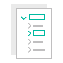
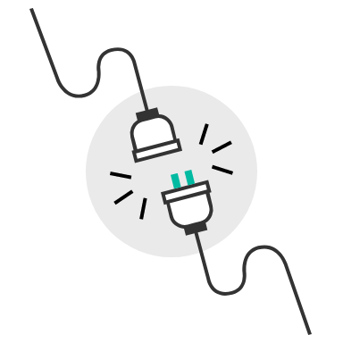
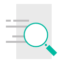

Explore Available APIs
Follow the arrow to see a pre-populated dashboard. You can also create a new dashboard with sample data.

Bind APIs to buttons
Allow users to undo, redo, properties, set view/edit mode, show/hide pane of a dashboard through button interactions.

Ready to Learn More?
Check out the resource links to create your own instance, getting started docs, Github repo, and more.